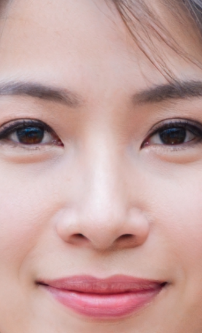
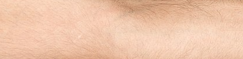
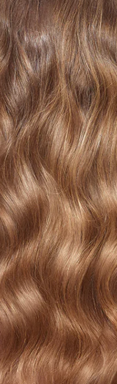
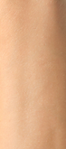

Como tirar as fotos para a análise de colorimetria
Use as imagens abaixo como referência. Fotos bem tiradas ajudam o app a estabilizar o branco e a analisar seu subtom com mais precisão.
Rosto com folha branca (obrigatório)
O app exige que a foto do rosto inclua uma folha branca ou cartão branco no enquadramento. Com isso o app estabiliza o branco e analisa as cores da sua pele com precisão.
Coloque o rosto e a folha branca no mesmo enquadramento, com luz natural difusa. Assim o app ajusta o branco e analisa sua pele com mais fidelidade.
1. Rosto

- Sem maquiagem.
- Luz natural difusa (evite sol direto ou sombra forte).
- Fundo neutro; se possível, folha branca ou cartão cinza ao lado para calibrar o branco.
- Sem filtros, flash ou luz artificial colorida.
2. Parte interna do braço

- Região interna do antebraço (onde a pele costuma ser mais uniforme).
- Luz natural; evite sombras fortes.
- Usamos essa área para ajudar a identificar o subtom da sua pele.
3. Cabelo

- Próximo à raiz, para captar a cor natural.
- Sem luz direta forte no cabelo.
- Sem produtos que alterem muito a cor (ex.: gel escuro).
4. Parte externa do braço (opcional)

- Região que costuma pegar sol.
- Opcional; ajuda a ver reação ao sol e a refinar o perfil.
← Voltar e enviar minhas fotos